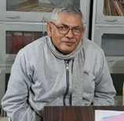

अशोक (संपर्क-8986269001)
डा॰ रमानन्द झा ‘रमण’क महत्व
मैथिली साहित्यमे डा॰ रमानन्द झा ‘रमण’क योगदान बहुत व्यापक अछि। हुनक योगदान समाज, साहित्य, संस्कृति के क्षेत्रमे विरल होइत अछि। लेखन आ अनुसन्धान, आलोचना, सम्पादन के क्षेत्रमे जे काज ओ केलनि से मैथिली साहित्यक हेतु सामान्य पाठक सभ लेल बहुत उपयोगी अछि। हुनक पोथी ‘बेसाहल’ (2003) मे डा॰ आनन्द मिश्र लिखने छथि जे, ‘मैथिली साहित्यक अनेक रचना पत्र-पत्रिकाक ढेर मे गुमिआयल अछि। बहुत लेखकक नाम तँ पाठक सुनने छथि किन्तु रचनाक दर्शन नहि होइत अछि। ओहन रचना के प्रकाशमे आनि महत्वपूर्ण चर्चा करि पाठककेँ परिचित करब हथि।’
वस्तुतः विशेष कऽ मैथिलीक आरम्भिक कथा आ उपन्यास सभ के ताकि कऽ ओकर सम्पादन आ पोथी रूपमे प्रकाशन मैथिली साहित्यमे हुनक जे महत्वपूर्ण योगदान अछि, से मानल जा सकैत अछि। जँ ताकि-हीर कऽ रमणजी ओकरा सभ के प्रकाशमे नहि अनितथि तँ मैथिलीक पाठक ओकर उपलब्धता नहि पबि सकैत छलथि, नहि पाठक आ आलोचक ओकर आलोचनात्मक विश्लेषण कऽ सकैत छलाह।
एहि आलोचनात्मक विश्लेषणक सन्दर्भमे ‘मैथिलीक आरम्भिक कथा’ (1978) आ ‘मैथिली कथाक धारा’ (2020) के सम्पादन-प्रकाशन विशेष महत्त्वक अछि। ‘मैथिली कथाक धारा’ मे 1940 सँ पूर्वक मैथिली कथा संग्रहित कएल गेल अछि। आरम्भिक उपन्यास ‘निर्दयी सासु’ आ ‘पुनर्विवाह’ (1984) के पोथी रूपमे प्रकाशमे अनलनि, जकर लेखक छथि जनार्दन झा ‘जनसीदन’। ‘निर्दयी सासु’ (1914) क प्रकाशन धारावाहिक रूपसँ मिथिला-मिहिरमे नवम्बर 1914 सँ 28 नवम्बर 1914 धरि भेल रहल। ‘पुनर्विवाह’क प्रकाशन 1926 मे भेल रहल। रमणजी जीबछ मिश्रक ‘रामेश्वर’ (1916) के सम्पादन कऽ 1996 मे प्रकाशित केलनि। रासबिहारी लाल दासक ‘सुमति’ (1918) के वर्ष 1996 मे प्रकाशित केलनि। आ पुण्यानन्द झाक ‘मिथिला दर्पण’ उपन्यास, जे 1925 ई. मे पूर्णिया सँ प्रकाशित भेल छल, तकरा वर्ष 2001 ई. मे पुनर्मुद्रित केलथि।
एहि प्रकारक पुनर्मुद्रण सभमे हुनक सम्पादकीय सोच बहुत महत्वपूर्ण होइत अछि। ओहि सँ उपन्यासकार आ उपन्यासक विषय-वस्तु पर ऐतिहासिक-सामाजिक दृष्टि सँ प्रकाश पड़ैत अछि। ‘मिथिला दर्पण’क उपन्यासकार पुण्यानन्द झाक सम्बन्धमे रमणजी लिखलनि अछि जे, ‘हिनक आरम्भिक शिक्षा अररिया हाई स्कूलमे भेल। प्रयाग कायस्थ पाठशालासँ इन्ट्रेन्स एवं [अस्पष्ट] कॉलेज सँ आर॰ ए॰ पास भेलाह। पण्डित पुण्यानन्द झा [अस्पष्ट] जकाँ एक स्वतन्त्रता सेनानी छलाह। स्वदेशी आन्दोलनक सक्रिय कार्यकर्ता छलाह। मातृभाषाक प्रबल उन्नायक ओ सेवक छलाह। ओ एम॰एल॰ए॰ सेहो भेल छलाह। ओ पूर्णिया जिला हिन्दी साहित्य सम्मेलनक सभापति छलाह। ओहिठामक केओ भवनक निर्माणमे पूर्ण सक्रिय छलाह। भाषा एवं राजनीति हेतु ओ जेल सक्रिय छलाह। साहित्यिक स्वतन्त्र स्वभाव केर छलाह।’
(२) [अस्पष्ट शीर्षक] उपन्यास मिथिला-मिहिरमे 1933-34 मे प्रकाशित भेल छल। ओहि उपन्यास के रमणजी साहित्य अकादेमी सँ प्रकाशित केलथि अछि। ‘[अस्पष्ट] रचना-संचयन’ (2012) मे संकलित केलनि अछि।
मैथिलीक आरम्भिक कथाकार सभमे हरिनन्दन ठाकुर ‘सरोज’क नाम प्रमुखता सँ अबैत अछि। सरोजजी 1930 ई. सँ लऽ कऽ 1945 ई. धरि प्रकाशित साहित्यिक कथा लेखनि सभमे बेसी कथा-विचारक कथाकार छलथि। हिनकर कथा-संग्रह डा॰ रमानन्द झा ‘रमण’क सम्पादनमे 2014 मे प्रकाशित भेल अछि। कथा-संग्रहक नाम [अस्पष्ट] अछि। एहि मे हुनक पत्र-पत्रिकामे प्रकाशित कथा सभ संग्रहित भेल अछि। हरिनन्दन ठाकुर ‘सरोज’क 1945 ई. मे देहावसान मात्र तीस वर्षक अवस्थामे भेलनि। रमणजी लिखलनि अछि जे, ‘सरोजजीक उपलब्ध साहित्यक अवलोकनसँ स्पष्ट अछि जे हुनक साहित्यिक अभिव्यक्तिक मूल विधा कथा, किन्तु साहित्यिक उपन्यास एवं आलोचना पिकर।’ ओ ‘माधवी-माधव’ (1935 ई.) उपन्यास लिखल, विद्यापति विषयक आलोचनाक पोथी ‘विद्यापति’ [वर्ष अस्पष्ट] लिखल। सीता नवमी [अस्पष्ट] लघुनाटक। किछु निबन्ध सेहो प्रकाशित छल, जेना [अस्पष्ट] आदि।
रमणजी जँ सरोजजीक साहित्य के ताकि-हीर ओकर अपन सम्पादनसँ प्रकाशित नहि करितथि तँ वर्तमान आ भविष्यक पाठक-अध्येता सभक समक्ष हुनक साहित्यक परिचय सम्भव नहि रहैत। एहि अर्थमे हुनक सम्पादकीय आ आलोचनात्मक श्रमक महत्त्व स्पष्ट अछि। सरोजजीक साहित्य के अन्धकारसँ निकालि प्रकाशमे अनबाक काज केवल संग्रह नहि, साहित्यिक इतिहासक पुनर्स्थापन सेहो अछि।
‘माधवी-माधव’ (1935) उपन्यासमे सर्वप्रथम कोनो नवयुवक-नवयुवतीक बीच प्रेम के संग बतलायब भेल अछि। एहि सँ पूर्व ‘मोहिनी-मोहन’ (1907-08) मे खाली पत्र-व्यवहार भेल छल। इहो आरम्भिक उपन्यास सभमे नवयुवक-नवयुवतीक स्वतंत्र मनोभाव आ विवाहक प्रश्नक प्रस्तुति के कारण साहित्यिक इतिहासमे महत्त्वपूर्ण अछि।
(३) [अस्पष्ट] नवयुवक मिथिलाक समाजक अवस्था पर अपन पक्ष प्रस्तुत करैत अछि। एहि सम्बन्धमे मूल पत्र-पत्रिका, उपन्यासक प्रति आ पुरान सामग्री ताकि कऽ रमणजीक आलोचनात्मक काजक महत्त्व बुझल जा सकैत अछि। पुरान साहित्यकारक बहुत रचना समयक गर्तमे दबि जाइत अछि; ओकरा खोजि कऽ फेर सँ पाठक धरि पहुँचेनिहार विरले भेटैत छथि। डा॰ रमानन्द झा ‘रमण’ एहि प्रकारक अतीतक सामग्री केँ खोजि, सम्पादित कऽ, साहित्यक इजोतमे आनिकऽ सृजनात्मक सेवा करि रहल छथि।
रमणजीक काज सभक प्रसंगमे मैथिलीक प्रसिद्ध लेखक [नाम अस्पष्ट] केर कथा, उपन्यास, आलोचना, दीर्घकथा आदि के सेहो ओ सम्पादित-प्रकाशित कएलनि। 2014-15 ई. सँ पूर्व हुनक कथा सभक संग्रह नहि प्रकाशित भेल छल। मात्र [अस्पष्ट] उपन्यासक मूल भाग 1981-82 मे प्रकाशित भेल रहय। उपरान्त वैदेही [अस्पष्ट] मे 1991 मे प्रकाशित रहल आ पुस्तक रूपमे [अस्पष्ट]।
2014-15 मे क्रमशः हुनक ‘रंगीन परदा’ (2014), [अस्पष्ट] (2014), ‘विश्वासघात’ (2015), [अस्पष्ट] कथा-संग्रह/उपन्यास (2015), [अस्पष्ट] उपन्यास (2015) तथा अन्य रचना सभक सम्पादन-प्रकाशन सम्भव भेल। एक लघु उपन्यास ‘जिनगी [अस्पष्ट]’ नाम सँ 2005 मे प्रकाशित भेल रहल। यदि रमणजी एना सतत प्रयत्न नहि करितथि, कथा, उपन्यास, आलोचना आदि बहुत ऐतिहासिक रचना सम्पादित-प्रकाशित नहि कएल गेल रहित तँ वर्तमानमे पाठकक समक्ष ई सामग्री उपलब्ध नहि रहैत।
(४) रमणजी द्वारा सम्पादित प्रमुख कृति सभ अछि जाहिमे पण्डित चेतनाथ झा कृत ‘श्रीजगन्नाथपुरी यात्रा’, तेजनाथ झा कृत ‘सुरराजविजय नाटक’, [अस्पष्ट] ‘वचनावली’, ‘विद्यापति विवरण’, [अस्पष्ट], ‘दीना-भद्री’ आ [अस्पष्ट] आदि प्रमुख मानल जा सकैत अछि।
पुराने पत्र-पत्रिकामे प्रकाशित आ पोथीक रूपमे अप्रकाशित होइतो अत्यन्त महत्वपूर्ण रचना सभ के ताकि-हीर ओकरा पाठक-समाजक समक्ष अपन सम्पादनक्रमे निरन्तर प्रकाशित करब रमणजीक विशिष्ट योगदान अछि। विभिन्न विषय आ विधा पर हुनक आलोचनात्मक निबन्ध सभ अनेक पोथीमे प्रकाशित अछि। रमणजीक पोथी सभमे ‘मैथिली साहित्य ओ राजनीति’, ‘अखियासल’, ‘बेसाहल’, ‘भजारल’, [अस्पष्ट] आदि महत्त्वपूर्ण अछि। मैथिली कथा आ उपन्यास पर काज करैत हमरा ई अनुभव भेल जे बिना रमणजीक सम्पादित पोथी अथवा हुनक मूल आलोचनात्मक निबन्ध के पढ़ले आ सम्यक् उल्लेख के बिना आधुनिक मैथिली कथा-साहित्य पर लेखन पूर्ण नहि भऽ सकैत अछि।
हुनक विषय बहुत व्यापक अछि। ओ मैथिली कथा-साहित्यमे विभिन्न विकास-चरण के कथा सभक उपलब्धि, कृतित्व आ साहित्यिक मूल्य पर विचार करैत छथि। विभिन्न कथाकारक कथा सभ पर सेहो आलोचनात्मक निबन्ध लिखल अछि। मैथिलीक विमर्शपरक साहित्य, नव-नव विषय आ प्रवृत्ति पर हुनक विचार आलोचनात्मक दृष्टि सँ महत्त्वपूर्ण अछि। मैथिली कवितामे सेहो हुनक आलोचनात्मक योगदान देखबा मे अबैत अछि।
(५) मैथिली साहित्यक इतिहास आ आलोचनामे हुनक काज मात्र विवरण नहि अछि। अपन विशिष्ट निबन्ध द्वारा अनेक साहित्यिक प्रश्न पर ओ विचार रखने छथि। आलोचनक रूपमे रमणजीक परम्परा के बादक लेखक सभ सेहो आगाँ बढ़ौलनि। नाट्यक सम्पादन आ प्रकाशनमे सेहो उल्लेखनीय योगदान अछि। मैथिली कथा-उपन्यास आलोचनामे हुनक बहुत निबन्ध अछि। मैथिली आलोचनामे आबि कथा समीक्षा एक स्थापित क्षेत्रक रूप लेलक अछि।
रमणजीक मैथिली साहित्यमे एक विशिष्ट योगदान ‘मैथिली नव कविता’ (1993 ई.) पोथी सेहो अछि। मैथिली नव कविता पर एहि तरहक व्यवस्थित पोथी दोसर नहि देखबामे आयल अछि। एहि पोथी द्वारा मैथिली नव कविताक पृष्ठभूमि, उत्पत्ति, प्रवृत्ति, शिल्प, पाठकीय संकट आ किछु प्रमुख कवि सभ पर सुविचारित आलोचनात्मक अध्ययन प्रस्तुत कएल गेल अछि। एहि पोथीक बाद मैथिली कविता पर समग्र रूपमे पोथी [अस्पष्ट]।
समग्र रूपमे मैथिली साहित्यक विभिन्न विधा, इतिहास, सम्पादन, पुनर्प्रकाशन आ आलोचनाक क्षेत्रमे डा॰ रमानन्द झा ‘रमण’क योगदान सँ मैथिली साहित्य समृद्ध भेल अछि, से कहब जा सकैत अछि।
मो॰ नं॰ 8986269001
अपन मंतव्य editorial.staff.videha@zohomail.in पर पठाउ।